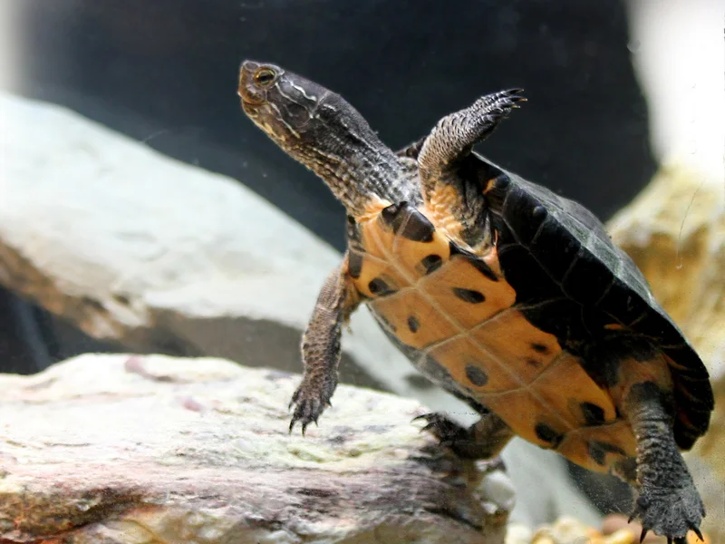

中米の太平洋岸に分布するオオニオイガメ属。属内では最小種だが最大甲長25cm前後の大型水棲ガメ。3本のキールと強い咬合力を持ち、気性が非常に荒い上級者向け種。魚食傾向の強い雑食性。

1年後の甲長は10〜15cm程度。オオニオイガメ属では最小種だが、成体でも甲長20〜25cmに達する中型〜大型のドロガメ。中米の太平洋岸（メキシコ南東部〜グアテマラ・エルサルバドル）の河川・湖沼に生きる肉食傾向の強い底棲種で、水底を力強く歩き回る姿が印象的。
10年後は甲長20〜25cm程度（オスは最大21cm、メスはより大型）。ミシシッピニオイガメの約2倍のサイズになる。90cm以上の水槽と強力なろ過設備が必要。20〜40年の寿命があり、強い咬合力と気性の荒さに対応できる設備・単独飼育を前提とした計画が重要。
サルヴィンオオニオイガメは属内では最小種だが、成体は甲長20〜25cmに達し、ミシシッピニオイガメ（最大13cm程度）とは全く異なる大きさになる。「ニオイガメ属の小型種」というイメージのまま小さな水槽を選ぶと成体時に手狭になりやすい。加えて気性が非常に荒く咬合力も強いため、単独飼育を基本とし、90cm以上の水槽と取り扱い時の注意を最初から計画しておくことが安定飼育への近道になりやすい。
中米の太平洋岸（メキシコ南東部のオアハカ州東部・チアパス州南部、グアテマラ南部、エルサルバドル南部）の河川・湖沼に生息します。オオニオイガメ属3種のうち本種のみが太平洋側に分布します。成体でも甲長20〜25cm（オスは最大21cm、メスの方が大型）で、属内では最小種です。背甲に3本のキールを持ち、腹甲は十字状に縮小してカミツキガメのような体型になります。魚・甲殻類・貝・小型のカメなどを食べる肉食傾向の強い雑食性で、果実や種子も食べます。気性が非常に荒く、複数飼育では激しく咬み合うため単独飼育が基本です。
大型種のため外部フィルター（エーハイム等）が推奨されます。週1の大量換水（1/3〜1/2）が水質維持の基本です。
← 横にスクロールできます
| 種名 | 甲長 | 難易度 | 必要環境 | 特徴 |
|---|---|---|---|---|
| サルヴィンオオニオイガメ このページ | 20〜25cm | 上級 | 90cm〜 | 本種・太平洋岸/属内最小 |
| スジオオニオイガメ | 30〜38cm | 上級 | 120cm〜 | 同属・大西洋岸/属内最大 |
| マタマタ | 35〜45cm | 上級 | 90cm〜 | 吸引捕食・特殊 |
| スパイニースッポン | 30〜50cm | 上級 | 90cm〜 | スッポン系 |